明哥的微生物世界 · 统计课堂 08
明哥的微生物世界 · 统计课堂 08期望、方差、协方差：统计公式是怎样一步步推出来的？
明哥的微生物世界 · 统计课堂 08
摘要：从期望、方差、协方差的基本性质出发，逐步推导样本率及两个样本率之差的期望与方差，再解释大样本正态近似和分类统计量 Q 的由来。把公式中省略的步骤补回来，让每一步都有依据。
大家好，我是明哥。
第6次课讲到样本率之差和分类频数的统计量Q时，我有些地方讲得太快了。尤其是从“算出期望和方差”走到“可以用正态分布近似”，中间还有一段重要的道理，没有交代清楚。
期望、方差和协方差，不仅描述随机变量的数字特征，也帮助我们理解统计量的抽样波动。以答题为例，用1表示答对、0表示答错，样本答对率就是这些0、1变量的平均值。在相同条件下反复抽取同样大小的样本，每次得到的样本率会有所不同；这些可能取值及其概率，构成样本率的抽样分布。在独立同分布、答对概率固定且介于0与1之间的条件下，随着样本量增大，标准化样本率的抽样分布趋近标准正态分布。比较两个独立样本的答对率时，率差的方差等于两个样本率的方差之和。进一步，在类别数固定、给定类别概率均为正的多项抽样模型下，样本量增大时，分类频数构造的Pearson Q统计量为什么具有渐近卡方分布？下面从期望、方差和协方差的基本性质出发，把这些推导逐步展开。
这篇沿着课堂例子，把这些步骤接起来。先记住一句话：期望和方差告诉我们分布的中心与波动尺度；它们本身不能决定分布的形状。
一、先看清：我们在算哪个量的波动？
设一个人回答某道题，结果只有答对和答错。用随机变量X表示结果：答对记1，答错记0。总体答对概率记为p。
一次回答只能得到0或1；如果反复独立抽取一组人，答对的比例会围绕p波动。这里的期望，就是按各种可能结果的概率加权得到的理论平均：
E(X) = 1 × p + 0 × (1−p) = p。
例如p = 0.3，E(X) = 0.3表示：按照这个答对概率反复独立抽取人来回答，每人答一道题，长期平均每人答对0.3道，答对者约占30%。 对100个人而言，预期有30人答对；实际人数会随抽样而波动。
方差描述随机变量围绕自身期望的波动大小，其定义是偏差平方的期望：
Var(X) = E[(X−E(X))²]。
把平方展开，就得到最常用的方差计算公式。记μ = E(X)，由于μ是一个固定常数：
Var(X) = E(X²−2μX+μ²)
= E(X²)−2μE(X)+μ²
= E(X²)−2μ²+μ²
= E(X²)−[E(X)]²。
也就是：方差等于“平方的期望”减去“期望的平方”。 对于0、1变量，X² = X，所以：
Var(X) = p−p² = p(1−p)。
注意E(X²)与[E(X)]²不同：前者先平方再取平均，后者先取平均再平方。二者的差，恰好就是方差。
后面出现的样本率、两个样本率之差、Q，也都是随机变量。讨论它们的方差，是问：如果按同样的规则重复抽样，这个统计量会怎样波动？ 一次已算出的数值与它在重复抽样中的分布，要分开理解。
二、期望可以逐项算，方差需要先看平方
下面各式中，a、b、c都是固定常数，所涉及的期望与方差存在。
期望具有线性性：随机变量的线性组合，其期望等于各自期望按相同系数作线性组合。写成公式就是：
E(aX+bY+c) = aE(X)+bE(Y)+c。
系数可以提出，和与差可以逐项求期望。这一步不要求X与Y独立。
例如，两个组的样本率之差，期望就是两个样本率的期望之差。
但方差不能照抄这个规则。先只看一个变量：
Var(aX+c)
= E[{aX+c−(aE(X)+c)}²]
= E[{a(X−E(X))}²]
= a²Var(X)。
这里的c为什么抵消？因为给每个取值都加上c，期望也同时增加c，二者的差保持不变：
(aX+c)−E(aX+c) = aX+c−aE(X)−c
= a[X−E(X)]。
所以，整体平移不改变方差；乘上a后，每个偏差也乘a，偏差的平方就乘a²。 具体来说：
- 整体加10，方差不变。
- 所有数乘2，方差变成原来的4倍。
- 所有数除以n，方差变成原来的1/n²。
- 改成−X，方差仍与X相同，因为(−1)² = 1。
最后一点，已经提示了“相减为什么可能变成方差相加”。但两个变量一起运算时，还要处理一个交叉项。
三、协方差，就是平方展开后不能漏掉的那一项
令μX = E(X)，μY = E(Y)。从差的方差开始展开：
Var(X−Y)
= E[{(X−μX)−(Y−μY)}²]
= E[(X−μX)²] + E[(Y−μY)²]
− 2E[(X−μX)(Y−μY)]。
最后一项中的期望，叫作协方差：
Cov(X,Y) = E[(X−μX)(Y−μY)]
= E(XY)−E(X)E(Y)。
两个变量常常一起高于各自均值、一起低于各自均值，偏差乘积倾向于为正；一个高、一个低，则倾向于为负。协方差记录这种共同波动，大小也受变量单位影响。
因此：
Var(X−Y) = Var(X)+Var(Y)−2Cov(X,Y)。
Var(X+Y) = Var(X)+Var(Y)+2Cov(X,Y)。
Var(aX+bY) = a²Var(X)+b²Var(Y)+2abCov(X,Y)。
图1展示了协方差怎样影响差值的方差。 为了单独看这种影响，先固定Var(X) = Var(Y) = 1。相关系数ρ的定义是：
ρ = Cov(X,Y)/[SD(X)SD(Y)]。
SD表示标准差。本例两个标准差都是1，因此Cov(X,Y) = ρ，代入上面的公式便得到：
Var(X−Y) = 2−2ρ。
图1的横轴是相关系数ρ，纵轴是差值X−Y的方差。沿曲线从左向右看，相关性越偏向正，差值的方差越小。例如ρ = −0.8时，差值方差为3.6；ρ = 0时为2；ρ = 0.8时为0.4。
这说明：两者常常同向变化时，做差可以抵消一部分共同波动；两者常常反向变化时，做差会放大波动。 所以，只知道X和Y各自的方差，还不足以确定X−Y的方差。

图1｜协方差对差值方差的影响。固定两个变量的方差均为1，按Var(X−Y) = 2−2ρ绘制理论曲线；向右表示相关系数增大，向下表示差值的波动减小。
若X与Y独立，在这里的有限二阶矩条件下，E(XY) = E(X)E(Y)，所以Cov(X,Y) = 0。差的方差才简化为：
Var(X−Y) = Var(X)+Var(Y)。
相减对应系数−1，计算方差时(−1)² = 1；再由独立性得到协方差为0，便得到两份方差相加。
也可以用X−X检查自己有没有漏项：同一个变量减自己恒为0，其方差当然为0。公式给出Var(X)+Var(X)−2Cov(X,X) = 0，因为Cov(X,X) = Var(X)。如果误把两个X当成独立，就会算错。
另一个常用性质是：Cov(aX+c,bY+d) = abCov(X,Y)。常数平移不改变协方差，两个系数分别提出。独立可以推出协方差为0，反过来通常不成立。
把常用性质放在一起，便于后面逐项调用。以下假设所需的期望、方差存在，所有字母系数都是固定常数。
期望的基本性质
常数： E(c) = c。
线性性： E(ΣaᵢXᵢ+c) = ΣaᵢE(Xᵢ)+c。Σ表示把有限个项加起来；无论变量是否独立，都可以逐项取期望，常数系数原样提出。
乘积： E(XY) = E(X)E(Y)+Cov(X,Y)。当协方差为0时，才可简化为两个期望的乘积；独立是保证这一点的充分条件。
二阶矩： E(X²) = Var(X)+[E(X)]²。
方差的基本性质
常用计算公式： Var(X) = E(X²)−[E(X)]²。
常数、平移与缩放： Var(c) = 0；Var(aX+c) = a²Var(X)。平移不改变波动，缩放后方差乘以系数的平方。
两个变量： Var(aX+bY) = a²Var(X)+b²Var(Y)+2abCov(X,Y)。把b设为−1，就得到差值方差中的负协方差项。
一般线性组合： 设S = a₁X₁+⋯+aₘXₘ，m是变量个数，aᵢ是固定系数，则：
Var(S) = Σᵢ₌₁ᵐ aᵢ²Var(Xᵢ) + 2Σᵢ＜ⱼ aᵢaⱼCov(Xᵢ,Xⱼ)。
第一部分怎么加？ 每个变量贡献一项“系数平方×自身方差”，共m项。
第二部分怎么加？ i＜j表示从这m个变量中，每次选两个不同变量，每对只写一次，共m(m−1)/2对。先将这两个变量的系数相乘，再乘它们的协方差，最后把所有配对项相加并乘2。
为什么乘2？ 展开[S−E(S)]²时，每一对交叉乘积会出现两次。例如X₁的偏差乘X₂的偏差，以及X₂的偏差乘X₁的偏差；两项相等，合并得到系数2。取期望后，偏差乘积就变成协方差。
用三个变量展开看：
Var(aX+bY+cZ) = a²Var(X)+b²Var(Y)+c²Var(Z)
+2abCov(X,Y)+2acCov(X,Z)+2bcCov(Y,Z)。
三对分别是(X,Y)、(X,Z)、(Y,Z)，没有遗漏，也没有重复。比如Var(X+Y−Z)中的三项协方差依次为+2Cov(X,Y)、−2Cov(X,Z)、−2Cov(Y,Z)；正负号由系数的乘积决定。
什么时候只加方差？ 当所有不同变量两两不相关时，协方差项全部为0，剩下Σaᵢ²Var(Xᵢ)。相互独立足以保证这一点；一般公式本身不要求独立，也不要求正态分布。
协方差的基本性质
定义与常用计算公式： Cov(X,Y) = E[(X−E(X))(Y−E(Y))] = E(XY)−E(X)E(Y)。先计算乘积XY的期望，再减去两个期望的乘积；两种写法等价。
对称性： Cov(X,Y) = Cov(Y,X)。
自身与常数： Cov(X,X) = Var(X)；Cov(X,c) = 0。
平移与缩放： Cov(aX+c,bY+d) = abCov(X,Y)。常数平移不影响协方差，两个位置上的系数分别提出。
每一边都可以相加展开： Cov(X+Y,Z) = Cov(X,Z)+Cov(Y,Z)；Cov(X,U+V) = Cov(X,U)+Cov(X,V)。相减时保留对应负号，无须假设独立。
双线性：两边同时展开。 第一个位置的每一项，都要与第二个位置的每一项配对：
Cov(aX+bY,cU+dV)
= acCov(X,U)+adCov(X,V)
+bcCov(Y,U)+bdCov(Y,V)。
左边有两项、右边有两项，因此得到2×2 = 4项。这里是“左边每项与右边每项配对”，不是前面方差公式中“不同变量每对只取一次”，所以不额外乘2。
例如： Cov(X−Y,U+V) = Cov(X,U)+Cov(X,V)−Cov(Y,U)−Cov(Y,V)。后面分类计数的比较量，就按这条性质逐项展开。
一般形式： Cov(ΣᵢaᵢXᵢ,ΣⱼbⱼYⱼ) = ΣᵢΣⱼaᵢbⱼCov(Xᵢ,Yⱼ)。两个求和号表示：第一个组合中的每项，都与第二个组合中的每项配对。两边包含同一个变量时，仍须保留Cov(X,X) = Var(X)。
与独立性的关系： 独立可以推出协方差为0，协方差为0通常不能反推独立。
“不相关不等于独立”也可以看一个小例子：X以相同概率取−1、0、1，Y = X²。因为E(X) = E(X³) = 0，所以Cov(X,Y) = 0；但知道X，就完全知道Y，二者显然不是独立的。
基础定义与性质可查阅CMU概率讲义：https://www.cs.cmu.edu/~mgormley/courses/ml-primer/probability.html
四、样本率的精确分布：先数人数，再除以总人数
假设独立抽取n个人，每个人答对同一道题的概率都为p。令Yᵢ表示第i个人是否答对，答对人数记为X。
Yᵢ取0或1；X = Y₁+⋯+Yₙ；样本率 p̂ = X/n。
这里的独立、相同概率是模型假设；有聚类、重复测量等相关性时，要重新考虑模型。p是总体概率，p̂则随抽到的人而变化。
在这个模型下，答对人数服从二项分布：
X ∼ Bin(n,p)。
P(X = x) = C(n,x)pˣ(1−p)ⁿ⁻ˣ，x = 0,1,…,n。
C(n,x)是从n个人中选出x个答对者的组合数，等于n!/[x!(n−x)!]；0! = 1。每种指定的答对、答错组合有相同的概率pˣ(1−p)ⁿ⁻ˣ，乘上组合数量，就得到上式。
样本率只是把计数刻度除以n，因此：
P(p̂ = x/n) = P(X = x)。
例如n = 10时，p̂只能取0、0.1、0.2、…、1，不可能取0.235。计数3对应比例0.3，两者对应事件的概率相同；这不表示X和p̂是同一个分布，它们的取值尺度已经不同。
再算期望。由于每个Yᵢ的期望都是p：
E(X) = ΣE(Yᵢ) = np；
E(p̂) = E(X/n) = E(X)/n = p。
方差要多一步：不同人的结果独立，协方差为0，所以：
Var(X) = ΣVar(Yᵢ) = np(1−p)。
Var(p̂) = Var(X/n) = Var(X)/n²
= np(1−p)/n² = p(1−p)/n。
分母先出现n²，但分子本来就有一个n，约去之后只剩1/n。把方差开平方，得到样本率的标准误：
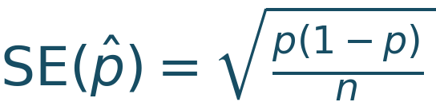
。
单个人0、1结果的标准差为
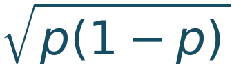
；样本率的标准误比它小倍。标准误就是统计量在重复抽样中的标准差。到这里，二项分布、期望和方差都是模型下的精确结果。还没有用到“大样本”，也没有得到“正态分布”。
五、为什么可以走到正态近似？关键在“平均数”
现在看清p̂的另一种写法：
p̂ = (Y₁+⋯+Yₙ)/n。
它就是n个0、1变量的样本平均数。这里可以应用中心极限定理：独立同分布、具有有限且非零方差的变量，其样本平均数减去总体均值，再除以自身的标准误，随样本量增大，分布趋近标准正态。
固定0＜p＜1时，Yᵢ满足这些条件。因此：
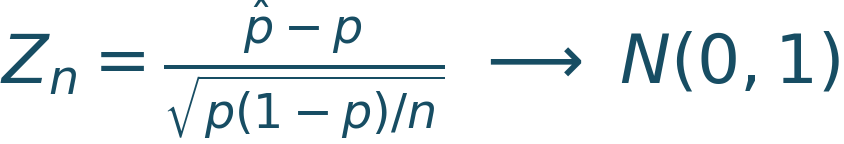
。
箭头表示分布趋近，不表示每一次抽样得到的数值都趋近某个正态随机数。把p̂ = X/n代入，逐步整理：
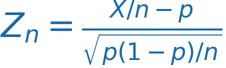
=
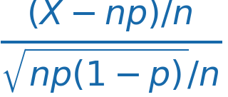
=
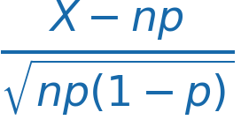
。
原来，标准化样本率与标准化二项计数，得到的是同一个Z！ 二项分布的正态近似与样本率的正态近似，正是同一件事在两种尺度下的表达。
于是，在适当的大样本条件下，可以写：
p̂ 近似服从 N(p, p(1−p)/n)。
本文N(均值,方差)的第二个参数是方差，不是标准差。
这里要分清三个对象：一个人的结果仍然只有0或1；有限n时，样本率仍是离散的；趋近标准正态的是减去p、除以标准误后的样本率。未经标准化的p̂会越来越集中到p附近，不会趋近一个方差固定不变的正态分布。
大数定律说明“样本率逐渐稳定在p附近”；中心极限定理进一步说明“适当放大后的误差呈现什么分布”。正态近似来自后者，不能只凭E(p̂)和Var(p̂)写出来。
（一）“大”到什么程度，不能只看n
通常同时检查np与n(1−p)，也就是模型预期的答对人数和答错人数。教材常用两者至少达到5或10作为经验检查，这些数不是普遍精确的分界线。
同样n = 100：p = 0.5时，预期50人答对、50人答错；p = 0.01时，却只有1人答对。后者的分布仍然明显偏斜。只记“n超过30就正态”，很容易用错。
图2把这两种情况画出来：先在固定p时比较样本量的影响，再在相同样本量下比较不同p。重点看蓝色精确概率与橙色近似概率能否贴合。

图2｜四个教学模型的精确二项概率（蓝色）与正态分布在对应小区间内的概率（橙色）。对取值x/n，橙线计算从(x−0.5)/n到(x+0.5)/n的正态概率，因此与蓝色比较的都是概率，不是把概率与密度直接叠在一起。上排固定p = 0.1，比较n = 10和100；下排固定n = 100，比较稀有事件p = 0.01与p = 0.5。图中横轴范围不同，用于看清各自分布。正态近似还可能分配少量概率到合理范围之外。
（二）课堂的小样本例子：n = 10、p = 0.1
总体答对概率为0.1，抽10个人，求样本率至少0.3的概率，即至少3个人答对的概率：
P(p̂ ≥ 0.3) = P(X ≥ 3)
= Σ从x=3到10 C(10,x)0.1ˣ0.9¹⁰⁻ˣ
≈ 0.070191。
这时E(p̂) = 0.1，Var(p̂) = 0.009，SE(p̂) ≈ 0.094868。如果用具有这两个参数的正态变量Y来近似，会怎样？
| 计算方式 | 所算的概率 | 结果 |
|---|---|---|
| 二项精确计算 | P(X ≥ 3) | 0.070191 |
| 正态近似，未校正 | P(Y ≥ 0.3) | 0.017507 |
| 正态近似，连续性校正 | P(Y ≥ 0.25) | 0.056923 |
为什么校正到0.25？离散计数3可以看作由区间2.5到3.5代表；从3往右累加，在连续曲线上便从2.5开始积分。除以n = 10，起点就是0.25。
所以，连续性校正对应的是半个离散步长：在计数尺度是0.5，在样本率尺度是0.5/n。
这里np只有1。校正后更接近精确值，但仍有明显误差。连续性校正修补的是离散与连续边界的错位，不能把一个偏斜的小样本分布变成正态分布。
六、两个样本率相减：先求精确的期望与方差
回到课堂的两组模型：第一组n₁ = 40、p₁ = 0.3；第二组n₂ = 50、p₂ = 0.2。组内各人的结果独立，两组也相互独立。p₁、p₂是给定总体概率，不是已经观察到的样本率。
X₁ ∼ Bin(40,0.3)，X₂ ∼ Bin(50,0.2)；
D = p̂₁−p̂₂ = X₁/40−X₂/50。
期望可以直接相减，不需要为这一步额外加上独立条件：
E(D) = E(p̂₁)−E(p̂₂) = p₁−p₂
= 0.10，即10个百分点。
方差先保留协方差：
Var(D) = Var(p̂₁)+Var(p̂₂)−2Cov(p̂₁,p̂₂)。
两组独立，最后一项为0。于是：
Var(D) = p₁(1−p₁)/n₁ + p₂(1−p₂)/n₂
= 0.3 × 0.7/40 + 0.2 × 0.8/50
= 0.00525 + 0.00320 = 0.00845。
，即9.19个百分点。
两组都有抽样误差。相减后，独立的两份波动不会自动抵消；−1这个系数在方差里被平方，才出现方差相加。
如果是同一批对象的前后结果，或者两个组之间存在相关性，就不能直接消掉协方差。是抽样设计决定能不能相加，不是看到两个率就自动相加。
七、率差到底服从什么分布？先把精确分布算出来
X₁有41个可能值，X₂有51个可能值，共41 × 51 = 2091种计数组合。两组独立，所以每种组合的概率为：
P(X₁ = x₁, X₂ = x₂)
= P(X₁ = x₁) × P(X₂ = x₂)。
对每个组合算d = x₁/40−x₂/50，再把产生同一个d的概率加起来，就得到D的精确分布：
P(D = d) = Σ满足x₁/40−x₂/50=d的组合 P(X₁=x₁)P(X₂=x₂)。
例如，(x₁,x₂) = (12,10)与(16,15)都给出D = 0.1。计算P(D = 0.1)时，要累加所有产生这个差值的组合，不能只取其中一对。
2091种组合对电脑很容易计算。这次三套脚本都做了完整枚举，保存每种组合和合并后的精确概率，作为近似计算的参照。
接着问课堂中的问题：总体率差为0.1时，抽样得到的率差至少0.2，有多大概率？
P(D ≥ 0.2)
= Σ满足x₁/40−x₂/50≥0.2的组合 P(X₁=x₁)P(X₂=x₂)
≈ 0.144336，即14.43%。
这是给定p₁ = 0.3、p₂ = 0.2模型下的抽样概率；它不是检验“两总体率相等”的P值，因为这里设定的总体率本来就不相等。
（一）先补一个桥梁：正态分布的可加性
如果X、Y相互独立，且X ∼ N(μ₁,σ₁²)、Y ∼ N(μ₂,σ₂²)，那么它们的线性组合仍是正态：
aX+bY+c ∼ N(aμ₁+bμ₂+c, a²σ₁²+b²σ₂²)。
这里系数是常数，且组合的方差大于0。若方差为0，结果就是一个常数。特别地：
X+Y ∼ N(μ₁+μ₂, σ₁²+σ₂²)；
X−Y ∼ N(μ₁−μ₂, σ₁²+σ₂²)。
减法就是取b = −1，方差中的b²仍为1。因此“可加性”也涵盖了独立正态变量的差。
这里其实有两条结论：期望、方差怎样算，来自前面的运算性质；算完以后仍是正态分布，来自正态分布的特殊性质。比如独立的两个0、1变量相加，均值、方差也可以相加，但和只能取0、1、2，显然不会精确服从正态分布。
如果X、Y相关，只知道它们各自为正态还不够保证线性组合正态。若进一步知道它们联合正态，线性组合仍为正态，但方差必须保留2abCov(X,Y)。本篇两独立组满足的是前面更直接的条件。
（二）再走到率差的正态近似
各组样本率在适当条件下近似正态，两组又独立，因此它们的差可以近似正态。严格的大样本表述，可令两个样本量同时增大、保持适当的比例，各组总体概率固定在0与1之间。
本例检查四个期望计数：12、28、10、40。它们支持尝试正态近似，近似是否足够好，还可与精确结果对照。
D 近似服从 N(0.1, 0.00845)。
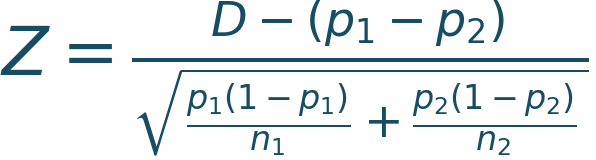
近似服从N(0,1)。
注意逻辑顺序：先由运算性质算出中心和方差，再由各组的中心极限定理与组间独立性得到正态近似。前一步不能替代后一步。
用Φ表示标准正态分布的累积概率函数，即Φ(z) = P(Z ≤ z)。不做连续性校正时：
P(D ≥ 0.2) ≈ 1−Φ[(0.2−0.1)/0.091924]
≈ 0.138329。
这道题还可以沿着实际格点做校正：
D = (5X₁−4X₂)/200。
0.2附近相邻可取值为0.195、0.200、0.205，间隔0.005。向左移动半格0.0025，就得到校正边界0.1975。
| 方法 | 边界 | P(D ≥ 0.2)的计算结果 |
|---|---|---|
| 联合二项精确枚举 | 保留离散事件D ≥ 0.2 | 0.144336 |
| 正态近似 | 0.2 | 0.138329 |
| 正态近似并作格点校正 | 0.1975 | 0.144422 |
本例校正后的结果很接近精确值。这里的半格依据两个分母共同产生的取值网格，不能对任意两个样本率之差都随便减去0.5/n₁或0.5/n₂；极端边缘还可能有不可取的格点。
图3左侧展示整个率差分布，右侧单独比较上表的尾概率。看整体形状，再看具体事件的概率误差，才能判断这种近似对当前问题是否合适。

图3｜左图为两独立二项样本产生的率差精确分布，以及正态分布在宽0.005的小区间内的概率；右图对比“率差至少0.2”的三种计算结果。所有概率均为理论计算，未使用随机模拟。
（三）总体p未知时，标准误怎么办？
上述例子给定p，适合看清抽样分布。实际资料通常只知道样本率，可用p̂代入估计标准误：
单组：估计SE =
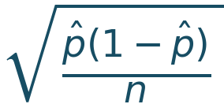
；独立两组：估计SE =
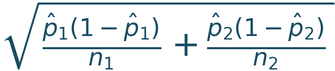
。
这是常用的代入估计，不会自动让小样本变得可靠。例如样本里没有一次事件，p̂ = 0，上式给出0，不表示真实总体概率已经毫无不确定性。检验“两总体率相等”时，还可能使用零假设下的合并率；不能把估计标准误与某一种检验公式混为一谈。
八、从样本率走到Q：同一个标准化误差的平方
前面推到的Z，恰好能接上课堂的二分类Q。把n个人分为答对、答错两类，观察频数是X与n−X，期望频数是np与n(1−p)。Pearson统计量为：
Q = (X−np)²/(np) + [(n−X)−n(1−p)]²/[n(1−p)]。
先看清两类各自的偏差。X是第一类的观察人数，np是它的期望人数，所以第一类的偏差为X−np。第二类有n−X人，期望人数为n(1−p)，它的偏差逐步展开为：
(n−X)−n(1−p)
= n−X−n+np
= np−X = −(X−np)。
例如第一类比期望多10人，总人数固定，第二类就比期望少10人。两类偏差分别为10和−10，平方后都为100。因此，Q的两个分子都可以写成(X−np)²，再把这个共同因子提出：
Q = (X−np)²{1/(np)+1/[n(1−p)]}
= (X−np)² × [(1−p)+p]/[np(1−p)]
= (X−np)²/[np(1−p)]
= Z² = (p̂−p)²/[p(1−p)/n]。
Q = Z²是精确代数关系；Z近似标准正态，才使Q近似χ²(1)。两个层次要分开。
课堂里的公平硬币例子：n = 100、p = 0.5，观察到60次正面、40次反面。此时Z = (60−50)/5 = 2，Q = 2² = 4；直接按两类算，Q = 10²/50+(−10)²/50 = 4，结果相同。
（一）再补一个桥梁：卡方分布的可加性
卡方分布可以从独立标准正态变量的平方和来理解。若Z₁,…,Zᵣ相互独立，且各自服从N(0,1)，那么：
Z₁²+⋯+Zᵣ² ∼ χ²(r)。
每一项Zᵢ²都服从χ²(1)。r个独立的这样的项相加，就得到自由度为r的卡方分布。
更一般地，若U与V独立，U ∼ χ²(ν₁)、V ∼ χ²(ν₂)，则：
U+V ∼ χ²(ν₁+ν₂)。
这里相加的是随机变量，自由度也随之相加。例如独立的χ²(2)与χ²(3)相加，得到χ²(5)。对整数自由度，可以把它想成两组互不重叠且相互独立的标准正态平方项拼到一起；一般正自由度也有相同的可加性。
独立条件不能省。 若U = Z²、V = Z²使用的是同一个标准正态变量，二者都服从χ²(1)，但U+V = 2Z²并不服从χ²(2)。虽然均值都是2，2Z²的方差为8，而χ²(2)的方差为4。
正态变量可以做一般线性组合；卡方的上述可加性说的是独立变量直接相加。任意加权、相减不能照搬“自由度相加”，例如U−V可能为负，就不能是只取非负值的卡方变量。
这也解释了为什么推导Q时不能只看到几个平方，就数一数给出自由度：需要先找到适当的标准化方向，并确认它们独立，或在大样本极限中独立。
接下来四分类会多几个方向，但用到的运算性质还是这些。
九、80个人独立作答，四个选项的人数为什么不独立？
把课堂的四分类例子放进一个具体情境：一道单选题有A、B、C、D四个选项，每个人必须且只能选一个。我们独立抽取80个人，记录他们选择的答案。这里统计的是“选了哪个选项”，不是“是否答对”。
为演示计算，零假设设为：每个人选择A、B、C、D的概率都为0.25。这个等概率设定是本例的模型假设；仅凭“有四个选项”，不能推出每个选项的概率都是0.25。
将原例的14、18、22、26人分别对应选A、B、C、D的人数。这是一组教学计数，不是实际调查了80个人。每个选项的期望人数都为80 × 0.25 = 20。
| 选项 | 观察人数 | 期望人数 | 观察人数−期望人数 | 平方偏差/期望人数 |
|---|---|---|---|---|
| A | 14 | 20 | −6 | 1.8 |
| B | 18 | 20 | −2 | 0.2 |
| C | 22 | 20 | 2 | 0.2 |
| D | 26 | 20 | 6 | 1.8 |
Pearson统计量Q就是最后一列的总和：
Q = 1.8+0.2+0.2+1.8 = 4。
一般记号中，Oj表示第j个类别的观察人数，mj表示该类的期望人数，因此Q = Σ (Oj−mj)²/mj。Σ表示把所有类别的项加起来，mj使用不同于期望算子E的记号。
平方使正负偏差都成为非负的贡献。至于为什么除以期望人数20，先放到下一小节；这里先把“四个选项的人数之间有什么关系”讲清楚。
（一）先分清：人的回答独立，还是四个选项的人数独立？
用O₁、O₂、O₃、O₄依次记录选A、B、C、D的人数。这四个数始终满足：
O₁+O₂+O₃+O₄ = 80。
知道前三个选项的人数，第四个就确定了。因此，四个选项的人数不是四个相互独立的随机变量。
“独立抽取80个人”说的是不同人的回答相互独立；“四类人数”是把这同一批人的回答汇总得到的四个数。观察对象之间的独立性，不会让汇总出来的四类人数也独立。
（二）第一步：只看一个人，记录他是否选A、是否选B
定义两个0、1变量：X记录“这个人是否选A”，选A记1，否则记0；Y记录“这个人是否选B”，选B记1，否则记0。
| 这个人实际选择 | X：是否选A | Y：是否选B |
|---|---|---|
| A | 1 | 0 |
| B | 0 | 1 |
| C或D | 0 | 0 |
X和Y记录的是同一个人的选择。 由于只能单选，X和Y不可能同时等于1；逐行看上表，无论他选哪个选项，XY都等于0。
设一个人选A的概率为pₐ，选B的概率为pᵦ。因为X、Y都是0、1变量，所以E(X) = pₐ、E(Y) = pᵦ；又因为XY恒为0，所以E(XY) = 0。
把这三个结果代入协方差的计算公式：
Cov(X,Y) = E(XY)−E(X)E(Y)
= 0−pₐpᵦ
= −pₐpᵦ。
本例pₐ = pᵦ = 0.25，因此同一个人“是否选A”和“是否选B”的协方差为−0.0625。负号来自这两种选择的互斥关系。
（三）第二步：把80个人的记录加起来，得到选A、选B的总人数
对第i个人，用Xᵢ记录他是否选A，用Yᵢ记录他是否选B。这里的下标i表示“第几个人”，不是“第几个选项”。
选A的总人数：O₁ = X₁+X₂+⋯+X₈₀。
选B的总人数：O₂ = Y₁+Y₂+⋯+Y₈₀。
按照前面介绍的协方差双线性性质，算Cov(O₁,O₂)时，要让左边的每个X与右边的每个Y配对，共有80 × 80个配对项。
第一种：同一个人的配对。 例如Cov(X₁,Y₁)，就是第1个人“是否选A”与“是否选B”的协方差，等于−pₐpᵦ。这种配对从第1个人到第80个人，共80项。
第二种：不同人的配对。 例如Cov(X₁,Y₂)，对应第1个人是否选A与第2个人是否选B。由于不同人的回答独立，这个协方差为0。其余80 × 79个跨人的配对项也都为0。
所以，所有项相加后，只留下80个同一个人的配对项：
Cov(O₁,O₂) = 80 × (−pₐpᵦ)
= −80 × 0.25 × 0.25 = −5。
这就解释了：80个人可以独立作答，而汇总后的选A人数与选B人数仍有负协方差。这里的−5是协方差，不是相关系数，也不表示选A每增加1人，选B就必定减少5人。
（四）每个选项的人数，其期望与方差怎么算？
以选A人数O₁为例，它是80个独立的0、1变量之和。每个Xᵢ的期望为pₐ，方差为pₐ(1−pₐ)。按期望的线性性和独立变量方差相加的性质：
E(O₁) = 80pₐ = 20。
Var(O₁) = 80pₐ(1−pₐ) = 15。
选B、C、D的计算相同：每类人数的期望为20、方差为15；任意两个不同选项的人数，协方差都为−5。
将人数80改记为n，将四个选项依次编号为1、2、3、4，再用j、ℓ代表其中任意两个不同类别，就得到一般公式。这里的pj是选择第j类的概率：
E(Oj) = npj；Var(Oj) = npj(1−pj)。
Cov(Oj,Oℓ) = −npjpℓ，j ≠ ℓ。
（五）最后检查：四类人数相加，为什么完全没有波动？
四个选项的人数各自会随抽样变化，但总人数始终为80，方差应当为0。用已经算出的方差和协方差检查一次：
四类之间共有六对：A与B、A与C、A与D、B与C、B与D、C与D。每对的协方差都为−5，因此六项合计为−30。
Var(O₁+O₂+O₃+O₄)
= 四个方差之和 + 2 × 六个协方差之和
= 4 × 15 + 2 × (−30)
= 60−60 = 0。
这里乘2，正是前面平方展开时每个交叉乘积出现两次的结果。四类人数各自有抽样波动，它们之间的负协方差使总人数保持不变。理解这一点，下一步才能看清为什么计算Q时要把四个类别作为一个整体。
（六）Q的分母为什么是期望频数，而不是每类的方差？
刚才二分类的推导解释了：Q的两项合起来，分母中的(1−p)才出现。四分类也需要整体理解。
回到四类，也不能把每一项都当作一个独立标准正态变量的平方。令rj =
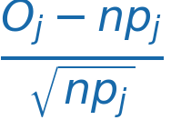
，则：Var(rj) = 1−pj，而不是1；
Cov(rj,rℓ) = ，而不是0。
本例各项方差为0.75，任意两项协方差为−0.25。若分别除以每类自己的方差15再相加，得到的是(4/3)Q，已经不是原来的Pearson Q，不能仍然拿同一个χ²(3)分布作参照。
（七）四分类为什么能走到χ²(3)？把三个方向写出来
只说“总和固定，所以少一个自由度”还不够：它解释了少一个方向，却没说明剩下三个方向为什么具有合适的尺度。
对于课堂的四类等概率模型，可以直接构造三个比较：
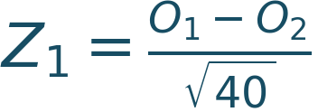
；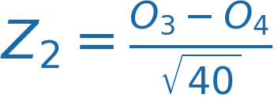
；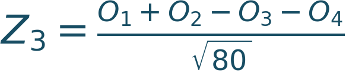
。
前两个分别比较A与B、C与D；第三个比较前两类合计与后两类合计。各分子的期望都是0。
为什么前两个比较量除以
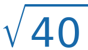
，第三个却除以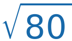
？这三个分母，分别是对应分子的标准差。我们逐个计算。先算前两个比较量。 前面已经得到每类人数的期望为20、方差为15，任意两类人数的协方差为−5。因此：
E(O₁−O₂) = E(O₁)−E(O₂) = 20−20 = 0；
Var(O₁−O₂) = Var(O₁)+Var(O₂)−2Cov(O₁,O₂)
= 15+15−2 × (−5) = 40。
第二个分子O₃−O₄的计算完全对应：期望为20−20 = 0，方差为15+15−2 × (−5) = 40。把它们分别除以标准差，方差就变成40/40 = 1，期望仍为0。
第三个比较量多了一次“合并类别”，下面分五步算。
第一步：把选A或B的人数合并，记为M。
M = O₁+O₂。
M表示前两个选项的总人数。这里另用M作记号，避免把“人数”与选项A混淆。对每个人来说，“是否选A或B”只有两种结果：是，记1；否，记0。
第二步：确定M的分布，求它的期望与方差。
每个人只能选一个选项，因此“选A”与“选B”互斥。在本例四类等概率的假设下：
P(选A或B) = P(选A)+P(选B) = 0.25+0.25 = 0.5。
80个人独立作答，所以M是80个独立、成功概率都为0.5的0、1变量之和。根据二项分布的定义：
M ∼ B(80,0.5)。
E(M) = 80 × 0.5 = 40；
Var(M) = 80 × 0.5 × (1−0.5) = 20。
这里二项分布的“成功”只是指“选A或B”，不表示答对。
第三步：用M改写第三个比较量的分子。
80个人中，选A或B的有M人，剩下选C或D的就有80−M人。于是：
O₁+O₂−O₃−O₄
= (O₁+O₂)−(O₃+O₄)
= M−(80−M)
= M−80+M
= 2M−80。
例如本次选A或B的有14+18 = 32人，选C或D的有22+26 = 48人，两边人数之差为32−48 = −16；代入2M−80，也得到2 × 32−80 = −16。这只是核对本次取值，下面的期望和方差则描述反复抽样时的波动。
第四步：计算这个分子的期望与方差。
期望使用线性性：
E(2M−80) = 2E(M)−80 = 2 × 40−80 = 0。
方差使用Var(aX+c) = a²Var(X)：减去常数80不改变方差，乘以2会使方差乘以2²。因此：
Var(2M−80) = 2²Var(M)
= 4 × 20
= 80。
也可以把Var(M)的计算一并代入，写成4 × 80 × 0.5 × 0.5 = 80。这里第一个4来自系数2的平方；后面的80 × 0.5 × 0.5才是M的方差。
第五步：除以分子的标准差，得到Z₃。
第三个分子的方差是80，所以标准差是。它的期望已经为0，因此：
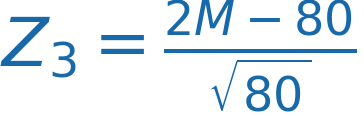
。E(Z₃) = E(2M−80)/ = 0；
Var(Z₃) = Var(2M−80)/80 = 80/80 = 1。
计算最后一行时，除以相当于乘一个常数，方差要乘这个常数的平方，也就是除以80。
这样，三个比较量的分母都有了出处：前两个分子的方差为40，分别除以；第三个分子的方差为80，除以。三个Z因此都具有均值0、方差1。这些均值和方差是精确结果；仅有这两个数字，还不能说Z服从标准正态分布，正态近似需要后面的大样本论证。
再检查共同波动，例如：
Cov(O₁−O₂, O₃−O₄)
= Cov(O₁,O₃)−Cov(O₁,O₄)
−Cov(O₂,O₃)+Cov(O₂,O₄)
= −5+5+5−5 = 0。
用同样的逐项展开方法，也能得到另外两对协方差为0。此时我们有了三个均值为0、方差为1、两两不相关的比较量。
下面把“Q等于三个Z的平方和”逐步展开。先给每个选项的偏差取一个简短名字。四类的期望人数都是20，因此定义：
d₁ = O₁−20：选A的观察人数减去期望人数；
d₂ = O₂−20：选B的观察人数减去期望人数；
d₃ = O₃−20：选C的观察人数减去期望人数；
d₄ = O₄−20：选D的观察人数减去期望人数。
本例四个偏差依次为−6、−2、2、6。因为四类观察人数的总和为80，四类期望人数的总和也为80，所以：
d₁+d₂+d₃+d₄ = 80−80 = 0。
因而d₃+d₄ = −(d₁+d₂)。
先改写前两个Z。 O₁−O₂ = (d₁+20)−(d₂+20) = d₁−d₂；同理O₃−O₄ = d₃−d₄。所以：
Z₁² = (d₁−d₂)²/40；
Z₂² = (d₃−d₄)²/40。
再改写第三个Z。 它的分子O₁+O₂−O₃−O₄中，四个20互相抵消，留下(d₁+d₂)−(d₃+d₄)。由于后两项之和是前两项之和的相反数，分子就等于2(d₁+d₂)：
Z₃² = [2(d₁+d₂)]²/80
= (d₁+d₂)²/20。
又因为(d₃+d₄)² = (d₁+d₂)²，我们可以把上式平均拆成两份，以便与前两个Z配对：
Z₃² = (d₁+d₂)²/40 + (d₃+d₄)²/40。
最后，把三个平方相加，按前两类、后两类分别归在一起：
Z₁²+Z₂²+Z₃²
= [(d₁−d₂)²+(d₁+d₂)²]/40
+ [(d₃−d₄)²+(d₃+d₄)²]/40。
先展开第一行的分子，就能看到交叉项如何抵消：
(d₁−d₂)² = d₁²−2d₁d₂+d₂²；
(d₁+d₂)² = d₁²+2d₁d₂+d₂²。
两式相加，−2d₁d₂与+2d₁d₂抵消，剩下2d₁²+2d₂²。第二行同理得到2d₃²+2d₄²。因此：
Z₁²+Z₂²+Z₃²
= [2d₁²+2d₂²+2d₃²+2d₄²]/40
= (d₁²+d₂²+d₃²+d₄²)/20。
右边就是“四类的平方偏差分别除以期望人数20，再相加”，正是Q的定义。于是：
Q = Z₁²+Z₂²+Z₃²。
代入14、18、22、26，三个平方分别为0.4、0.4、3.2，加起来仍然等于4。
这里还差最后一个条件：不相关本身不等于独立。 当样本量增大、四个类别概率固定且均为0.25时，多项分布的中心极限定理使这三个标准化比较量联合趋近正态；上面的分母也相应写成
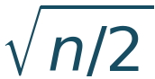
、、。极限中协方差为0的联合正态分量相互独立，才得到三个独立标准正态的平方和。因此，四分类的Pearson Q具有渐近χ²(3)参照分布。有限样本下Q是离散的，不会精确等于连续的卡方分布。
图4上半部分把三个比较方向对Q的贡献画出来，下半部分用重复抽样展示Q的分布与χ²(3)曲线的接近程度。前者核对代数关系，后者帮助理解分布近似。

图4｜上图核对同一次观察的Q = 0.4+0.4+3.2 = 4；下图比较20,000次多项抽样的Q与χ²(3)密度。图中模拟使用n = 80、四类概率各0.25；模拟帮助观察近似，不构成证明。
一般k类、各pj > 0且概率事先给定时，也有类似的加权变换，保留k−1个有效方向，得到χ²(k−1)的大样本近似。上面的简单三式专用于四类等概率，不能原样套到任意类别概率。
类别稀疏、期望频数很小时，近似可能不可靠；如果分类概率还用了同一批数据估计参数，自由度也不能直接照写k−1。
还可以用期望做一个漂亮的核对：在概率事先给定且正确的多项模型下，
E(Q) = Σ E[(Oj−npj)²]/(npj)
= Σ Var(Oj)/(npj)
= Σ(1−pj) = k−1。
这个期望等式在有限样本下就成立，因为期望逐项相加不需要类别独立。但“均值等于k−1”单独并不能证明Q服从卡方分布，分布近似仍需要上面的联合极限论证。
多项分布与Pearson统计量参考：Penn State STAT 504，第2课：https://online.stat.psu.edu/stat504/Lesson02
十、把“精确”与“近似”分清，公式才接得上
| 课堂对象 | 模型下的精确结论 | 何时需要近似 |
|---|---|---|
| 0、1结果Y | E(Y) = p，Var(Y) = p(1−p) | 单个Y不会因抽样人数增多而变正态 |
| 样本率p̂ | 二项计数除以n；E = p，Var = p(1−p)/n | 标准化后，由中心极限定理联系到N(0,1) |
| 独立两组率差D | 联合二项枚举；均值相减，方差相加 | 各组具备适当条件，再近似为正态 |
| 独立正态线性组合 | 仍为正态；方差按系数平方相加 | 原变量仅近似正态时，组合也需作近似理解 |
| 独立卡方之和 | 仍为卡方，自由度相加 | Q的标准化方向若仅渐近正态，卡方结论也只是渐近的 |
| 二分类Q | Q = Z² | Z近似标准正态时，Q近似χ²(1) |
| k分类Q | 固定正确模型下E(Q) = k−1 | 联合极限与总数约束给出渐近χ²(k−1) |
本篇配套R、Python和MATLAB脚本，先算二项精确概率，再算正态近似与连续性校正；接着枚举两组的2091种计数组合，最后核对分类频数的协方差与Q。控制台按“问题—结果—解释”输出。无需三种语言都学，任选一种即可。
回到这节课，我们把三个关键关系再说清楚。
第一，样本率的方差，是单个人0、1结果方差的1/n。 单个人结果的方差为p(1−p)；n个人相互独立，答对总人数的方差为np(1−p)。样本率把总人数除以n，方差便除以n²，得到p(1−p)/n。这就是“先相加，再取平均”带来的变化。
第二，人数多，还要看事件出现得够不够多。 n = 100、p = 0.01时，预期只有1个人答对，实际答对人数常在0、1、2附近，分布明显偏向一侧；左右对称的正态曲线就可能近似不好。因此，要同时检查np和n(1−p)，即预期的答对人数和答错人数。
第三，两个率相减后的波动，还取决于它们是否共同变化。 一般要写出“两份方差之和减去两倍协方差”；确认两组独立后，协方差为0，才简化为两份方差相加。同一批对象前后测量时，这种独立性通常不能直接假定。
沿着这三个关系，才能理解标准误怎样计算，以及后面的置信区间和假设检验为什么这样构造。
本篇配套资料：https://github.com/fuyuming/statistics-classroom/tree/main/stats_classroom/article08_expectation
完整仓库下载：https://github.com/fuyuming/statistics-classroom/archive/refs/heads/main.zip
下载解压后进入article08_expectation目录，按README运行代码/expectation_variance_covariance.R、代码/expectation_variance_covariance.py或代码/expectation_variance_covariance.m。配套目录只保留当前一套脚本。所有输入均是教学模型或教学计数，不含真实学生个人资料。
延伸阅读：二项分布的正态近似与连续性校正，Penn State STAT 414，第28课：https://online.stat.psu.edu/stat414/Lesson28
这篇想补上的，是我在课堂上省略的连接：从观察怎样产生，到统计量怎样构造；从运算性质，到抽样分布；最后才是用哪一种分布做近似。
这里是“明哥的微生物世界”。我们继续把统计课堂里没讲透的地方，慢慢讲清楚。